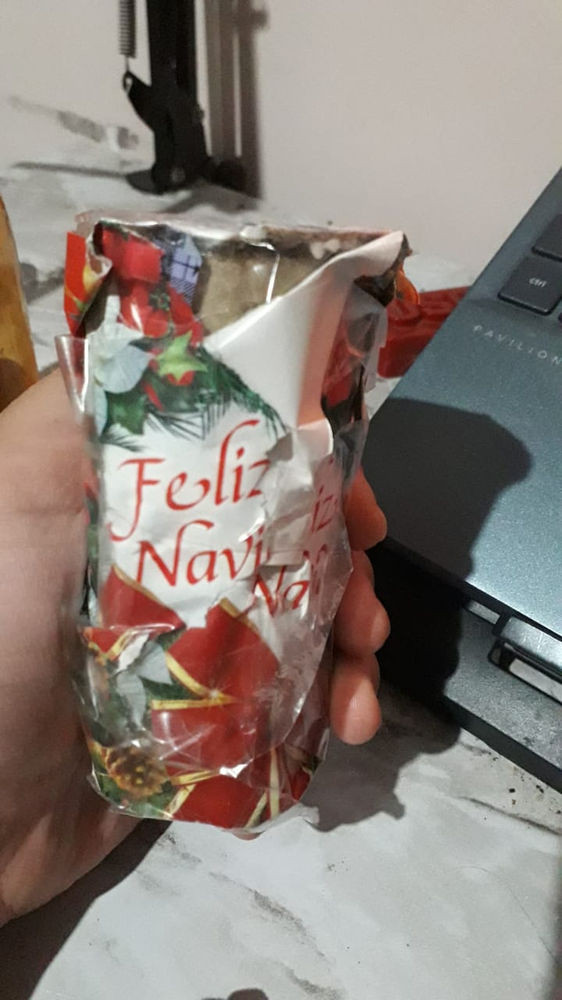

Los shakers, al igual que otros instrumentos de percusión, es parte fundamental de la música, tal vez no de la música moderna, pero si de la folclorica.
este tipo de instrumentos rudimentarios se han podido observar en casi todas las culturas del mundo, pues son faciles de manufacturar y de aprender a tocar,
Estos instrumentos son importantes, pues para muchos son su primera exposicion de primera mano a la ritmica de percusión
son la primera experiencia musical de muchas personas, y por ende merecen algo de respeto aunque profesionalmente casi nunca sean usados.
